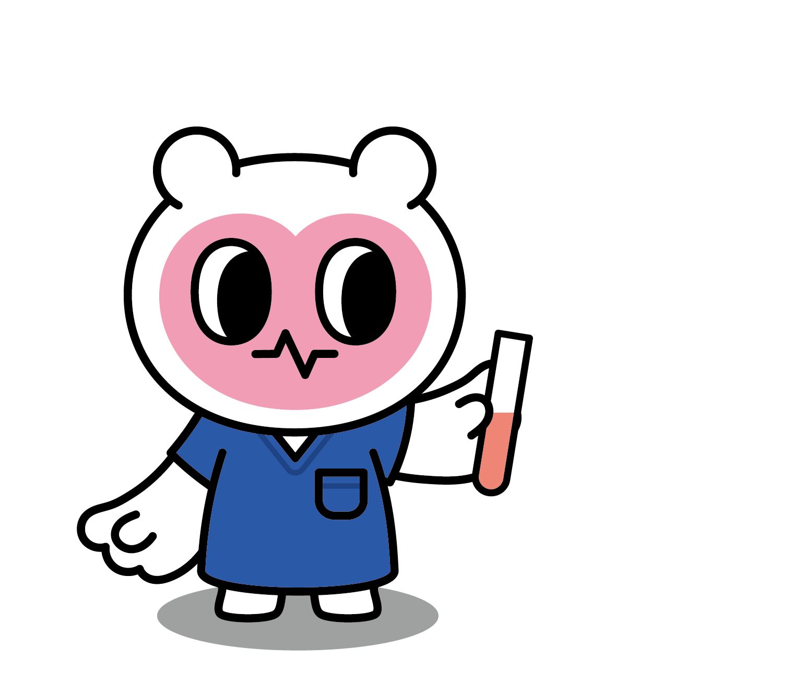
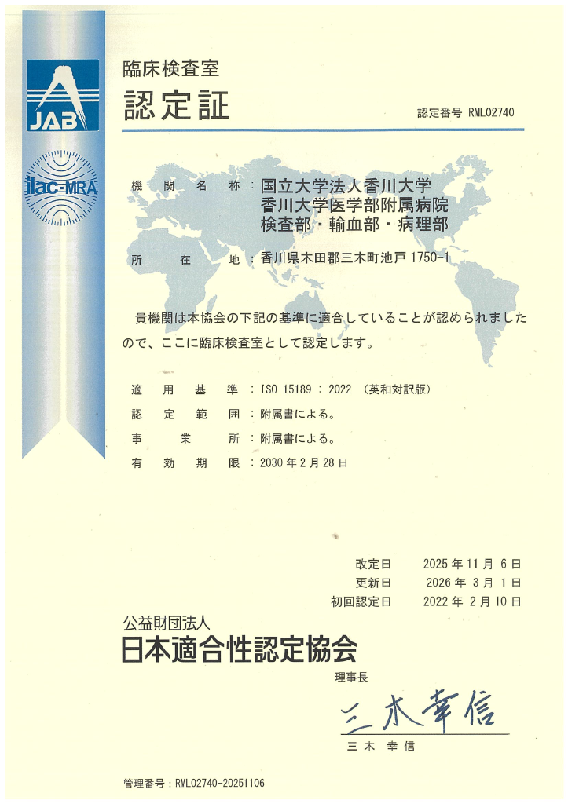

当検査部門は、国際規格 ISO15189（臨床検査室の品質と能力に関する要求事項）を取得しています。
本認定は、検査結果の信頼性・精度管理・品質保証体制が国際基準を満たしていることを示すものです。 今後も高品質な検査サービスの提供に努めてまいります。
| 資格 | 人数 |
|---|---|
| 認定血液検査技師 | 2 |
| 認定一般検査技師 | 1 |
| 認定臨床微生物検査技師 | 4 |
| 認定輸血検査技師 | 1 |
| 超音波検査士（循環器領域） | 2 |
| 認定臨床化学・免疫化学精度管理検査技師 | 3 |
| 一級遺伝子分析科学認定士 | 1 |
| 緊急臨床検査士 | 8 |
| 二級臨床検査士（血液学） | 5 |
| 二級臨床検査士（臨床化学） | 4 |
| 二級臨床検査士（微生物学） | 6 |
| 二級臨床検査士（神経生理学） | 1 |
| 二級臨床検査士（呼吸生理学） | 1 |
| 遺伝子分析科学認定士（初級） | 2 |
| 上級バイオ技術認定 | 1 |
| 心電図検定1級 | 1 |
| 心電図検定2級 | 3 |
| 心電図検定3級 | 2 |
| 日本サイトメトリー技術者 | 2 |
| 第二種ME技術者 | 3 |
| 臨床工学技士 | 1 |
| 健康食品管理士 | 1 |
| 感染制御認定微生物技師（ICMT） | 1 |
| NST専門療養士 | 1 |
| 日本糖尿病療養指導士 | 2 |
| 初級システムアドミニストレータ | 1 |
| 日本臨床神経生理学専門技術士 | 1 |
| 細胞治療認定管理師 | 1 |
| 一般劇毒物取扱者資格 | 1 |
| 日本DMAT隊員・業務調整員資格 | 1 |